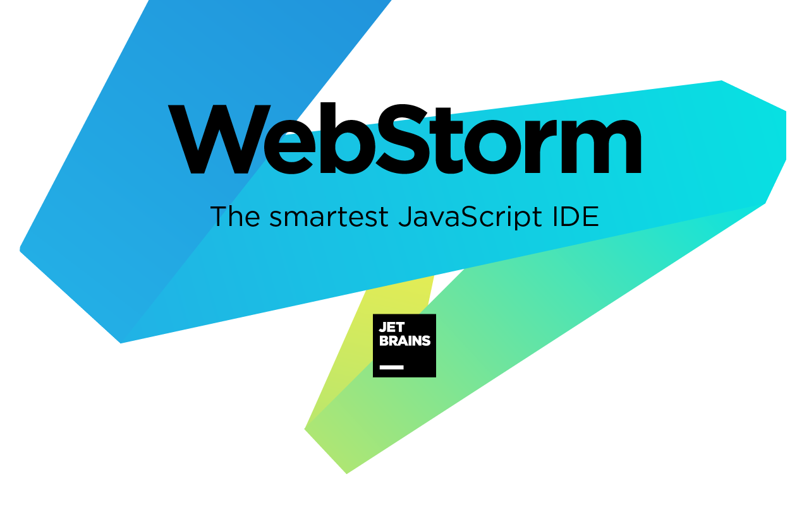

WebStorm
WebStorm — это интегрированная среда для разработки на JavaScript и связанных с ним технологиях. Как и другие IDE JetBrains, WebStorm позволяет автоматизировать рутинную работу и легко справляться со сложными задачами, делая разработку более увлекательной.

IDE создана на базе платформы IntelliJ, разработанной JetBrains и выпущенной под открытой лицензией, и оснащена множеством возможностей, которые сделают разработку более приятной и продуктивной.
Если вы фронтенд-разработчик или же фулстек-разработчик, время от времени работающий над интерфейсами, WebStorm поможет вам сосредоточиться на том стеке технологий, который нужен вам в данный момент. У вас будут все необходимые инструменты для разработки высококлассных приложений на JavaScript.
WebStorm хорошо понимает структуру проектов и поможет вам с любыми аспектами написания кода. IDE сделает автодополнение кода, отследит ошибки и избыточный код, предложив возможные исправления, и поможет сделать безопасный рефакторинг.
Инструменты для разработчика встроены в WebStorm, поэтому вам почти не придется переключать контекст. Экономьте время при перемещении по кодовой базе, файлам проекта или настройкам IDE.
Наладить эффективную командную работу помогут возможности совместной разработки, продвинутая интеграция системы контроля версий и многое другое.
Темы интерфейса, горячие клавиши, плагины — настройте все так, как нравится вам.
WebStorm предлагает множество специальных возможностей для самых разных нужд. Вы можете настраивать цвета элементов интерфейса, менять размер окон и шрифтов в редакторе, корректировать цветовую схему в случае нарушенного цветовосприятия, настраивать сочетания клавиш и многое другое.
Также поддерживаются инструменты чтения с экрана.